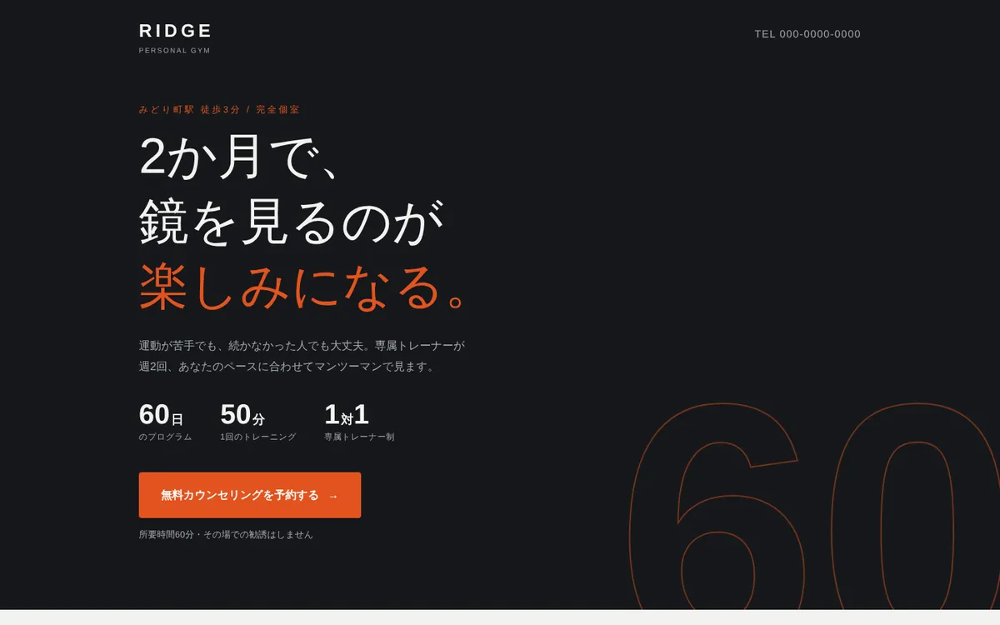
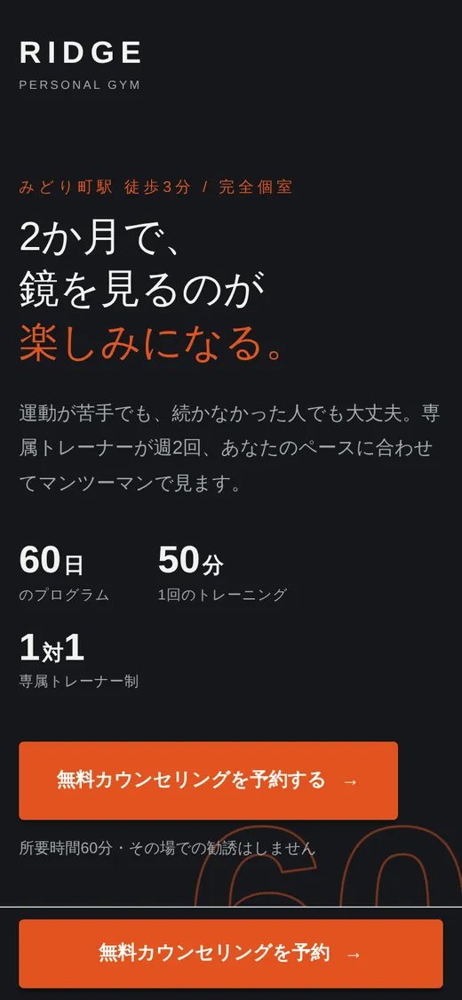

パーソナルジム「RIDGE」
無料カウンセリングの予約を増やすためのLP。読む人の不安を一つずつ消しながら、予約ボタンまで迷わず進める構成にしました。
- 区分
- 自主制作
- 種類
- LP（1ページ）
- 担当
- 構成・デザイン・実装
- 対応
- PC・スマホ・ダークモード


Overview背景・目的・ターゲット
- 制作背景
- 駅近くの完全個室のパーソナルジムを想定しました。パーソナルジムは料金が高く、「無理に入会させられそう」という不安から予約をためらう人が多いジャンルです。その不安を先回りして解消するLPが必要だと考えました。
- 目的
- 無料カウンセリングの予約をしてもらうこと。ページのすべてのセクションを、最後に予約ボタンを押してもらうために並べています。
- ターゲット
- 運動が苦手、または一人でジムに通って続かなかった20〜40代。大きいジムの人の目が気になる人。
Conceptデザインの考え方
「やる気が出る、でも怖くない」がテーマです。黒い背景に太い書体の見出しで力強さを出しつつ、オレンジ寄りの赤を「押してほしいボタン」だけに使って、目が自然にボタンへ向かうようにしました。数字や英字は細長い書体にして、計測器のような正確さを感じさせています。
配色
- #16181B： 黒（帯の背景）
- #E2531F： オレンジレッド（ボタン）
- #F2F2EF： コンクリートグレー（背景）
- #5D6168： 薄い文字
書体
Dela Gothic One（見出し）／ Noto Sans JP（本文）／ Oswald（数字・英字）
Process制作の流れ
- LPの構成を決める悩み → 解決策（選ばれる理由）→ 料金 → 入会までの流れ → お客様の声 → よくある質問 → 予約、の順にしました。料金のあとに「流れ」と「質問」を置き、料金を見て生まれる不安をすぐに消す並びです。
- ファーストビューのデザイン「2か月で、鏡を見るのが楽しみになる。」というコピーと、60日・50分・1対1の3つの数字で、何が手に入るかを一目でわかるようにしました。
- 予約までの導線予約ボタンをページ内の3か所に置き、スマホでは画面下にずっと表示。フォームが見えているときは重ならないよう隠します。
- フォームの実装と確認入力ミスがあればその場で赤字で知らせるようにし、PCとスマホの両方で動作を確認しました。
制作にはAIツール（Claude・ChatGPT）を使い、表示の確認と修正、色や大きさの調整は自分で行いました。
Tech使用技術・実装した機能
- スマホ下部の固定予約ボタンIntersectionObserver でフォームが画面に入ったかを調べ、入ったら固定ボタンを隠します。
- 入力チェックつき予約フォーム名前・電話番号・希望日を送信前にチェックし、間違いがあれば入力欄の下にエラーを表示します。
- 開け閉めできる「よくある質問」
<details>タグを使い、JavaScriptなしで開閉できるようにしました。キーボードでも操作できます。 - 料金プランの強調いちばん人気のプランだけ枠線の色を変え、比べやすくしました。
// 予約フォームが見えている間は、画面下の予約ボタンを隠す
new IntersectionObserver(function (entries) {
sticky.style.visibility =
entries[0].isIntersecting ? 'hidden' : 'visible';
}).observe(booking);